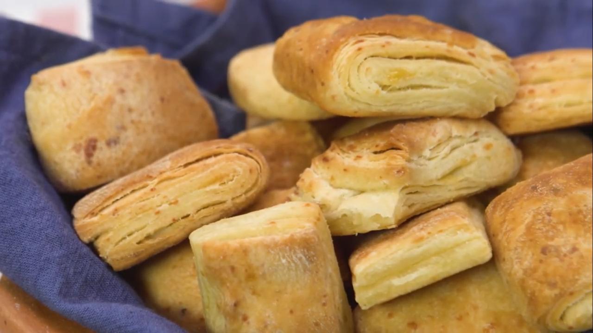

Libritos de Queso

Ingredientes
- 300 g de harina 0000.
- 150 cc de agua.
- 10 g de sal.
- Una cdta de levadura seca.
- 3 cda de queso rallado.
- Una cdta de miel.
- 25 g de grasa.
Para el empaste
- 85 g de margarina.
Procedimiento
- Armar la masa haciendo una corona con los secos. Luego agregar los ingredientes húmedos. Integrar y
amasar.
- Descansar 20 minutos.
- Estirar en forma de rectángulo y colocar la margarina pomada sobre la masa o colocarla fría (previamente
estirada con palote sobre dos papeles separadores y llevada al frío).
- Tapar como un sobre el empaste con la masa.
- Estirar y dar una vuelta doble. Dejar que la masa descanse tapada durante 20 minutos.
- Volver a estirar y dar otra vuelta doble. Dejar descansar 20 minutos más.
- Estirar y cortar los bordes.
- Cortar dos rectángulos.
- Pintar una cara con huevo batido y plegar la masa a la mitad a lo largo.
- Cortar el ancho de los libritos de 4 cm y llevar a una placa enmantecada.
- Dejar fermentar durante una hora.
- Llevar al horno a 190° durante 18 minutos.